הפיזיקה, הכימיה והביולוגיה שמאחורי הקלפים.
קלפי האטומים

מימן (H)
היסוד הנפוץ ביותר ביקום, על פני כדור הארץ וביצורים חיים, לפי מספר האטומים. הוא גם האטום הקטן ביותר והקל ביותר.
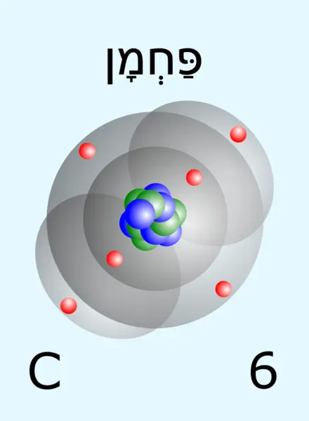
פחמן (C)
יסוד היוצר מגוון עצום של תרכובות. תרכובות פחמן הן התרכובות הממלאות את כל תפקידי המפתח ביצורים חיים.

חנקן (N)
היסוד הנפוץ ביותר באטמוספירת כדור הארץ, והרביעי בשכיחותו ביצורים חיים. נמצא ברוב המולקולות הפונקציונליות בגוף האדם. אמנם החנקן נפוץ מאוד, אך בעיקר בצורת היסוד שלו; קשה להשיג תרכובות חנקן, והן הכרחיות לקיום חיים. הן מיוצרות מצורת היסוד של החנקן במספר תהליכים ביולוגיים ופיזיקליים בטבע, וגם בתעשייה.

חמצן (O)
היסוד הנפוץ ביותר ביצורים חיים, לפי מסה. אחד היסודות הפעילים ביותר מבחינה כימית.

היתוך גרעיני
תהליך שבו מספר אטומים מתחברים יחד לאטום אחד. היתוך גרעיני כמו שבמשחק אינו קיים בכדור הארץ. הוא יכול להתרחש רק במרכזי כוכבים גדולים בהרבה מהשמש, או בסופרנובות. יתר על כן, תוצרי ההיתוך תלויים לא רק במספר האטומי של המגיבים אלא גם במספר המסה, שיכול להיות שונה אפילו בין שני אטומים בעלי אותו מספר אטומי, כך שהוא לאו דווקא ייתן את אותה תוצאה כמו במשחק.
היתוך גרעיני פשוט יותר קורה בשמש. באמצע המאה ה־20 הצליחו לבצע אותו גם באופן מלאכותי, אבל לא באופן מבוקר: זוהי פצצת המימן. יש ניסיונות רבים לבצע היתוך גרעיני מבוקר, והצלחתם צפויה לפתור חלק ניכר מבעיות האנרגיה ואיכות הסביבה.
הציור שעל הקלפים
על קלפי האטומים מופיעה המחשה של מודל האטום המקובל היום במדע, עבור כל אחד מהאטומים שבמשחק. המודל הזה הוא שכלול של מודל האטום של בוהר, וכמוהו מבוסס על מכניקה קוונטית. לפיו האלקטרונים מתחלקים לרמות אנרגיה, וכל רמת אנרגיה מתחלקת לאורביטלים. באטומים שבמשחק יש עד שתי רמות אנרגיה: ברמה הראשונה אורביטל יחיד מסוג S, המתואר ככדור סביב הגרעין בצבע אפור־שקוף, ובו עד שני אלקטרונים בצבע אדום; ברמת האנרגיה הבאה יש אורביטל אחד מסוג S ואחד מסוג P. את אורביטל P נהוג להמחיש בתור שלוש צורות תלת־ממדיות דמויות שמינייה, ובתמונה מופיעות אחת או שתיים מהן, בהתאם לסוג האטום ולמספר האלקטרונים. במרכז האטום מופיע הגרעין, המורכב מפרוטונים בצבע כחול ומנייטרונים בצבע ירוק. כל הצבעים מלאכותיים: במציאות עצמים אלו קטנים מדי מכדי שיהיה להם צבע.
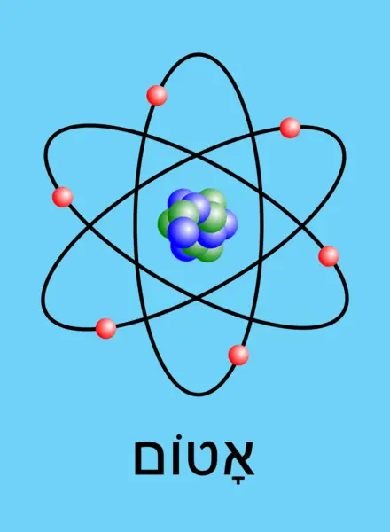
על גב קלפי האטומים מופיעה המחשה של מודל האטום של רתרפורד, על דוגמת אטום הפחמן. המודל הזה קדום יותר ממודל האטום של בוהר והרבה פחות מדויק, והוא גם אינו עקבי. עם זאת הוא היווה פריצת דרך משמעותית בזמנו, וגם את הבסיס למודל של בוהר. עד היום משתמשים בו כדי להמחיש באופן ציורי או סכמתי את מבנה האטום.
קלפי המולקולות

אלקאנים (CnH2n+2)
קבוצה של תרכובות פחמן פשוטות הבנויות מפחמן וממימן. המתאן, האתאן, הפרופאן והבוטאן הם אלקאנים. נפט מהווה כמעט כולו תערובת של אלקאנים שונים. האלקאנים משמשים כדלק וכחומר גלם לייצור חומרים שונים.

אמוניה (NH3)
תרכובת חנקן פשוטה. מהווה בסיס לרוב תרכובות החנקן. בתחילת המאה ה־20 למדו לייצר אמוניה באופן תעשייתי, מה שהוביל ליכולת לייצר דשנים, שבתורם אפשרו את גידול האוכלוסייה המסיבי במהלך המאה ה־20.
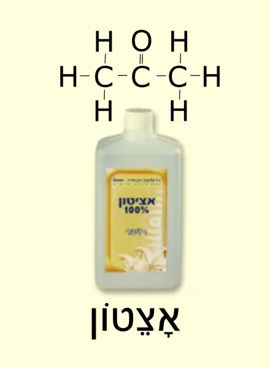
אצטון ((CH3)2CO)
תרכובת פחמן המכילה אטום חמצן אחד, בדומה לאלכוהול. משמשת כממס וכחומר גלם לייצור תרכובות חשובות אחרות, לרבות חומרי נפץ. חיים ויצמן פיתח תהליך תעשייתי יעיל לייצור אצטון; התהליך סייע לניצחון מדינות ההסכמה במלחמת העולם הראשונה, והקנה לוויצמן הון ומעמד. ויצמן השתמש באלה כדי להשיג את הצהרת בלפור, שהייתה צעד לקראת הקמתה של מדינת ישראל.
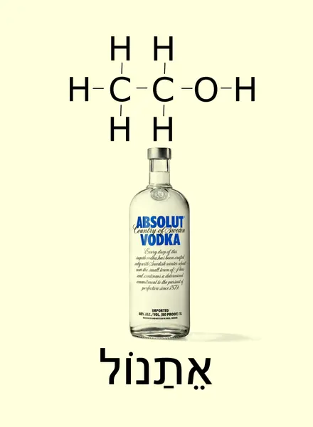
אתנול (C2H6O)
הכוהל הנפוץ ביותר. הוא המרכיב הפעיל במשקאות משכרים. האתנול רעיל אך לא קטלני. אנשים רבים נהנים לשתות משקאות משכרים בגלל ההשפעה המטשטשת של האתנול על המוח, הנקראת שיכרות. כמו כן, בתרבויות רבות, למשל ביהודית, יש לחלק מהמשקאות האלה תפקיד טקסי.
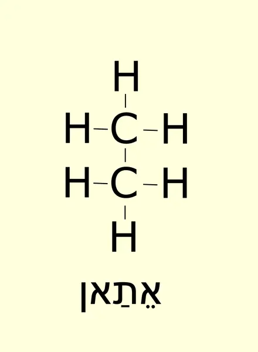
אתאן (C2H6)
מרכיב משני של "גז טבעי". דומה בתכונותיו למתאן.
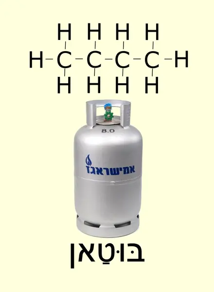
בוטאן (C4H10)
לצד פרופאן מהווה מרכיב מרכזי ב"גז בישול". מופק בדרך כלל מנפט, על ידי זיקוק. נוח יותר לשינוע מאשר "גז טבעי", מכיוון שהוא מתנזל בלחץ נמוך יחסית.
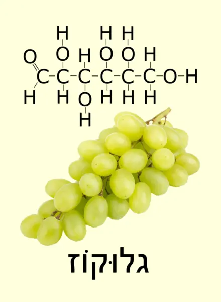
גלוקוז (C6H12O6)
הסוכר הפשוט ביותר. כל שאר הסוכרים, לרבות הסוכר הלבן המוכר לנו היטב, מבוססים על שילוב של גלוקוז וסוכרים הדומים לו, למשל פרוקטוז. הגלוקוז הוא מרכיב המזון היסודי של בעלי חיים: יתר מרכיבי המזון מפורקים בדרך כלל תחילה לגלוקוז, ואז הגוף צורך אותם ומפיק מהם אנרגיה. צמחים מייצרים גלוקוז ממים ומפחמן דו־חמצני באמצעות אנרגיית השמש, בפוטוסינתזה, ויתר החומרים שמהם בנויים החיים מיוצרים בעיקר מגלוקוז. למרות חשיבותו התזונתית הרבה, צריכה ישירה של גלוקוז, ושל סוכרים פשוטים אחרים, בכמויות גדולות אינה מומלצת, מכיוון שהם מתעכלים במהירות, מה שמקשה על ויסותם בגוף.
ענבים מכילים כמות גדולה יחסית של גלוקוז, ולעיתים קוראים לגלוקוז "סוכר ענבים".
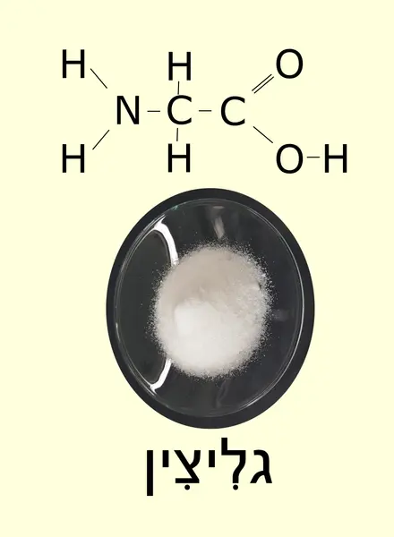
גליצין (C2H5NO2)
חומצת האמינו הפשוטה ביותר. בטבע יש 20 חומצות אמינו, וההבדל ביניהן לבין גליצין הוא שאחד מאטומי המימן המרכזיים בגליצין מוחלף בקבוצת אטומים אחרת. ניתן לחבר את צדה האחד של חומצת אמינו אחת לצדה האחר של חומצת אמינו אחרת; קשר זה, שבמהלך היווצרותו נפלטת מולקולת מים, נקרא קשר פפטידי. רצף ארוך של חומצות אמינו המחוברות כך נקרא חלבון. כמעט כל התהליכים ביצורים חיים מתבצעים על ידי חלבונים.
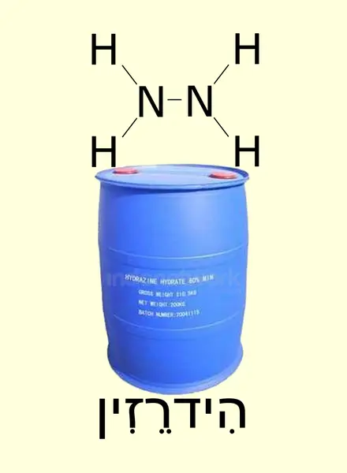
הידרזין (N2H4)
תרכובת חנקן שימושית לדשן, לחומרי נפץ ולדלק חלליות. מיוצרת בדרך כלל מאמוניה.
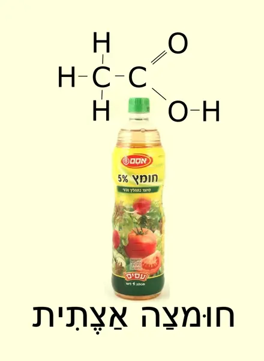
חומצה אצטית (CH3COOH)
חומצה פשוטה יחסית. מהווה את המרכיב הפעיל בחומץ, שהוא חומצה אצטית מומסת במים בריכוז של 5%.

חמצן (O2)
הגז שאותו אנו נושמים. בעלי חיים אינם יכולים להתקיים בלעדיו, אולם יצורים חיים אחרים אינם זקוקים לו. מגיב בקלות רבה עם חומרים רבים, ולכן אינו יכול להתקיים לאורך זמן, בתנאים דומים לאלו שבכדור הארץ, מבלי שמשהו ייצר אותו. על כדור הארץ הקדום לא היה חמצן, עד שצמחים החלו לייצר אותו מהפחמן הדו־חמצני.
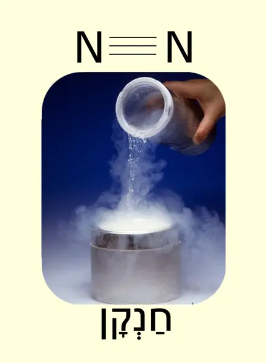
חנקן (N2)
המרכיב המרכזי באוויר. קיבל את שמו שלא בצדק: אמנם העדר חמצן חונק, אך החנקן אינו חונק כלל. החנקן חשוב מאוד לקיום החיים.
בלחץ אטמוספרי החנקן מתנזל בטמפרטורה נמוכה מאוד. חנקן נוזלי משמש בעיקר לקירור.
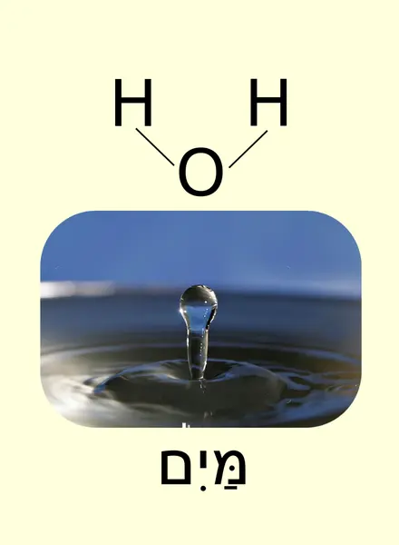
מים (H2O)
התרכובת הנפוצה ביותר על פני כדור הארץ וביצורים חיים. קריטית לקיום חיים.
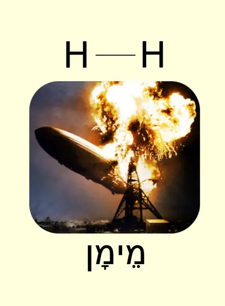
מימן (H2)
הגז הקל ביותר, ואחד הגזים הבודדים הקלים מהאוויר. דליק מאוד. אמנם המימן נפוץ מאוד, אך מולקולת המימן כמעט ואינה קיימת בטבע על פני כדור הארץ, והיא מיוצרת בתעשייה בתהליכים כימיים. משמשת בעיקר כחומר גלם לתרכובות אחרות, וגם לעיתים כדלק. בעבר שימשה לכלי טיס קלים מהאוויר, למשל כדור פורח, ושימוש זה הופסק כמעט לחלוטין בשל מסוכנותו.
הצפלין "הינדנבורג", שהיה ממולא במימן, התפוצץ מניצוץ.
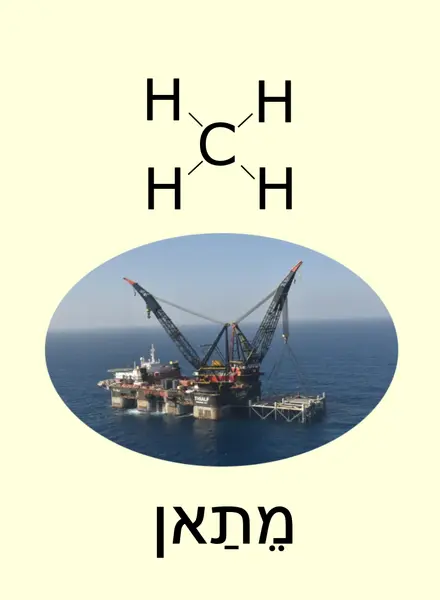
מתאן (CH4)
המרכיב המרכזי של "גז טבעי". משמש בעיקר כדלק, אך גם כחומר גלם לתרכובות אחרות. נחשב לדלק נקי יחסית: בגלל משקלו הנמוך קל לנקות אותו מחומרים אחרים, בעירתו כמעט מלאה, ותוצרי הבעירה הם בעיקר מים ומעט יחסית פחמן דו־חמצני. מצד שני, כרייתו עלולה לסכן את הסביבה, מכיוון שבהיותו גז חלק ממנו בורח לעיתים לאטמוספירה. ליד חופי ישראל מצאו גז טבעי, והוא הדלק הטבעי היחיד שיש לישראל בכמות משמעותית.
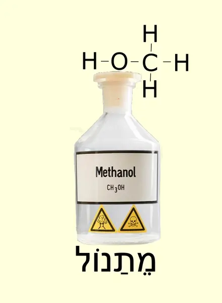
מתנול (CH4O)
הכוהל הפשוט ביותר. רעיל במיוחד. אנשים רבים, בעיקר אלכוהוליסטים, מתעוורים או מתים משתיית מתנול כשהם חושבים אותו בטעות לאתנול.
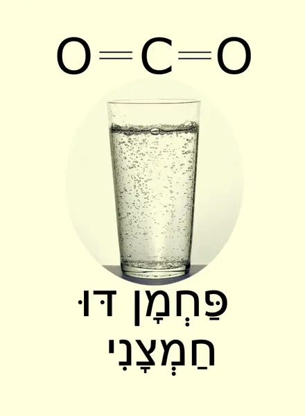
פחמן דו־חמצני (CO2)
גז המהווה את חומר הגלם שממנו בנויים החיים. צמחים מפרקים אותו, בשילוב עם מים, בעזרת פוטוסינתזה, לחמצן שאותו הם פולטים לאטמוספירה ולתרכובות פחמן שמהן הם בונים את עצמם. בעלי חיים מייצרים פחמן דו־חמצני מהחמצן שהם נושמים ומתרכובות הפחמן שהם אוכלים, וכך חוזר הפחמן הדו־חמצני לאטמוספירה. בזכות מסיסותו הגבוהה במים הוא משמש אותנו להגזת משקאות כמו סודה.
פחמן דו־חמצני נפלט גם כתוצאה משריפת דלק, וזו אחת הסיבות שאחוזו באטמוספירה עולה בעשורים האחרונים. עלייה זו מגבירה את אפקט החממה, הגורם לכדור הארץ לספוג יותר מאנרגיית השמש ובכך מעלה את הטמפרטורה שלו. אלמלא אפקט זה היה כדור הארץ קר מדי בשביל רובם המכריע של היצורים החיים עליו, אולם עליית טמפרטורת כדור הארץ בעשורים האחרונים עלולה לגרום נזק אקולוגי שיפגע בכולנו. זו הסיבה שבעשורים האחרונים נעשים מאמצים לצמצם את פליטת הפחמן הדו־חמצני.
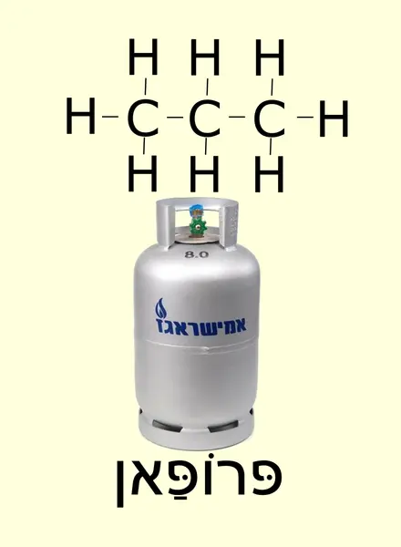
פרופאן (C3H8)
לצד בוטאן מהווה מרכיב מרכזי ב"גז בישול". דומה בתכונותיו לבוטאן.

שתנן (CON2H4)
אחד המרכיבים הראשיים בשתן. ניתן גם לייצר אותו באופן תעשייתי, ויש לו שימושים רבים, לרבות דישון. אצל בעלי חיים רבים השתנן מיוצר בכבד מאמוניה ומחומרי פסולת ביולוגית רעילים אחרים. הוא אינו רעיל במיוחד, ומופרש מהגוף דרך השתן. מחוץ לגוף השתנן מתפרק חזרה לאמוניה, מה שנותן לשתן את ריחו.
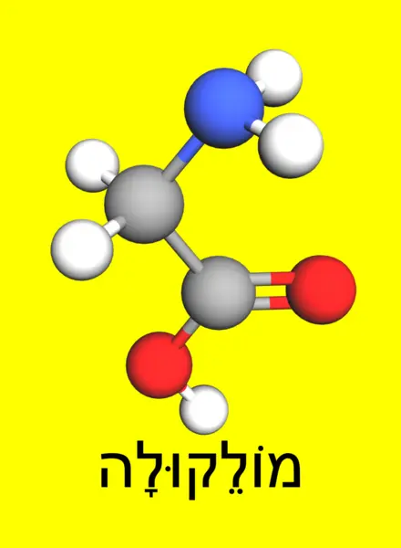
על גב קלפי המולקולה מופיע דגם של מולקולת גליצין.